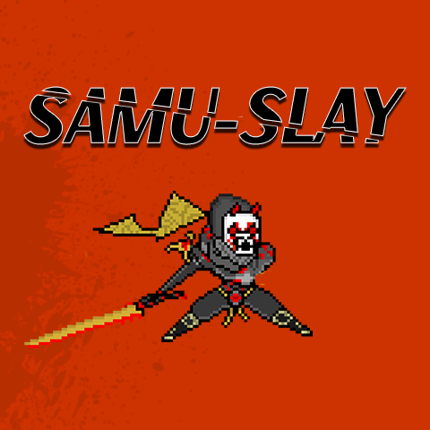

2D Arcade Game
Samu Slay is a game created for personal creativity. I accomplished this task with my brother using Godot and GDScript. Samu Slay is a 2D arcade-style game.
Samu Slay consists of simple left or right controls, which allows a samurai to attack in those directions. As scary demonic enemies run towards the samurai faster and more often over time from both directions, the user must live as long as possible by attacking and adding up scores.
Creating Samu Slay was my first complete game, but it could have been more polished. Using Godot and GDScript, I was able to learn more about what it means to develop games. The sheer satisfaction of applying my ideas to the game and testing them made me realize that game development was the right path for me.